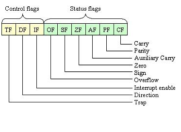

En este laboratorio exploraremos cómo el procesador maneja la aritmética a bajo nivel. Al terminarlo, habremos logrado:
ADD, ADC), resta (SUB, SBB), multiplicación (MUL, IMUL) y división (DIV, IDIV) en sus variantes de 8 y 16 bits.CALL / RET) para separar responsabilidades y reutilizar código.Podemos pensar en las flags como señales que el procesador enciende o apaga automáticamente después de cada operación para comunicarnos información adicional.
Cada vez que la ALU ejecuta una operación aritmética, no solo produce un resultado numérico, sino que también actualiza un registro especial llamado registro de flags (o registro de estado). Este registro nos describe características del resultado que acabamos de calcular.

Los cuatro flags más relevantes para nuestro trabajo en aritmética son:
Flag | Nombre completo | Activación |
| Zero Flag | El resultado de la operación es exactamente cero |
| Sign Flag | El bit más significativo del resultado es 1, lo que indica un número negativo en representación con signo |
| Overflow Flag | El resultado excede el rango representable con signo |
| Carry Flag | Hubo un acarreo (en suma) o un préstamo (en resta) que no cabe en el registro destino |
ADDLa instrucción ADD suma dos operandos y guarda el resultado en el destino. Si el resultado no cabe en el registro destino, el exceso activa el Carry Flag.
ADD destino, fuente ; destino = destino + fuente
Para 8 bits — el resultado queda en AL. En este ejemplo, sumaremos 5 y 3:
MOV AL, 5
MOV BL, 3
ADD AL, BL ; resultado en AL
Para 16 bits — el resultado queda en AX. En este ejemplo, sumaremos 210 y 15:
MOV AX, 210
MOV BX, 15
ADD AX, BX ; resultado en AX
(Para ejemplificarlo usaremos un registro de 8 bits pero el mismo concepto es aplicable a registros de 16 o 32 bits)
Un registro de 8 bits puede guardar valores entre 0 y 255. Cuando una operación que realizamos produce un resultado fuera de ese rango, el procesador no puede mostrarlo completo. Para no perder esa información, activa el Carry Flag (CF).
Acarreo en la suma — cuando el resultado supera el límite superior.
Imaginemos que sumamos 200 + 100. El resultado correcto es 300, pero 300 no cabe en 8 bits. Lo que ocurre es que el registro solo guarda los 8 bits más bajos del resultado, que corresponden a 44. El "1" sobrante se registra en el Carry Flag:
200 + 100 = 300 → el registro guarda 44, y CF = 1
Pensémoslo así: 300 en binario son 9 bits. Un registro de 8 bits solo alcanza para los 8 últimos. El bit noveno (el que "sobra") es exactamente el Carry Flag.
ADCCuando los números que queremos sumar son más grandes que un solo registro, necesitamos operar en partes. La suma de las partes bajas puede generar un acarreo que debemos trasladar a la suma de las partes altas. ADC recoge ese acarreo automáticamente:
ADC destino, fuente ; destino = destino + fuente + CF
Es importante que limpiemos el CF con CLC antes de comenzar, para evitar que un acarreo residual de una operación anterior contamine nuestro resultado.
Para 8 bits — En este ejemplo, queremos realizar la suma de 100d + 200d sobre los registros AH:AL:
; Pasar el número a hexadecimal
; 100d -> 0064h
; 200d -> 00C8h
; Dividir en partes bajas y altas
; Partes bajas
MOV AL, 64h
MOV BL, 0C8h
; Partes altas
MOV AH, 00h
MOV BH, 00h
; Sumar partes bajas
ADD AL, BL
; Sumar partes altas aprovechando la CF
ADC AH, BH ;Resultado en AX (AH:AL)
Suma de 16 bits usando registros de 8 bits — En este ejemplo, sumaremos dos números de 16 bits (12FFh + 0101h) operando sus partes por separado. Cuando las partes bajas sumen más de 255, el ADC pasará ese "1" extra a la parte alta:
; Número 1: 12FFh (Alta: 12h, Baja: FFh)
; Número 2: 0101h (Alta: 01h, Baja: 01h)
; 1. Cargamos las partes bajas
MOV AL, 0FFh
MOV BL, 01h
; 2. Cargamos las partes altas
MOV AH, 12h
MOV BH, 01h
; 3. Sumamos las partes bajas con ADD
ADD AL, BL ; FFh + 01h = 00h. AL se queda en 0 y se activa el acarreo (CF = 1)
; 4. Sumamos las partes altas con ADC
ADC AH, BH ; AH = 12h + 01h + CF(1) = 14h
; El resultado final queda en AX: 1400h
💡 Si usáramos ADD en el segundo paso en lugar de ADC, perderíamos el acarreo de la primera suma y nuestro resultado sería incorrecto.
SUBSUB resta la fuente del destino y guarda el resultado en el destino. Si el destino es menor que la fuente en aritmética sin signo, la operación necesita un préstamo que activa el Carry Flag.
SUB destino, fuente ; destino = destino - fuente
Para 8 bits — el resultado queda en AL. En este ejemplo, restaremos 5 - 3:
MOV AL, 5
MOV BL, 3
SUB AL, BL ; resultado en AL
Para 16 bits — el resultado queda en AX. En este ejemplo, restaremos 3200 - 1000:
MOV AX, 3200d
MOV BX, 1000d
SUB AX, BX ; resultado en AX
Préstamo en la resta — cuando el resultado cae por debajo del límite inferior.
Ahora imaginemos restar 50 - 80. El resultado correcto es -30, pero en aritmética sin signo los negativos no existen. Lo que hace el procesador es interpretar ese "retroceso" como una vuelta circular: el registro llega a 0 y sigue contando hacia atrás desde 255, 254, 253... hasta posicionarse en 226. El Carry Flag se activa para indicarnos que se necesitó ese préstamo:
50 - 80 = -30 → el registro guarda 226, y CF = 1
SBBDe manera simétrica a ADC, SBB extiende SUB para restar números que no caben en un solo registro. Incorpora el Carry Flag como bit de préstamo de la operación anterior:
SBB destino, fuente ; destino = destino - fuente - CF
Internamente, la resta con préstamo se realiza sumando el complemento a dos del sustraendo, por lo que SBB combina ese mecanismo con el préstamo del CF.
Para 8 bits — En este ejemplo, queremos realizar la resta de 50d - 80d sobre los registros AH:AL:
; Pasar los números a hexadecimal
; 50d -> 0032h
; 80d -> 0050h
; Partes bajas
MOV AL, 32h ; 50d
MOV BL, 50h ; 80d
; Partes altas
MOV AH, 00h
MOV BH, 00h
; 1. Restamos las partes bajas con SUB
SUB AL, BL ; 50 - 80 = -30. AL se queda con E2h (226) y se activa el préstamo (CF = 1)
; 2. Restamos las partes altas con SBB
SBB AH, BH ; AH = 00h - 00h - CF(1) = FFh
; El resultado final queda en AX: FFE2h (-30 en decimal)
MULMUL trata ambos operandos como números sin signo y siempre usa un registro implícito como primer factor: AL para operandos de 8 bits, AX para operandos de 16 bits. El resultado ocupa el doble de espacio que los factores, porque el producto de dos números de N bits puede requerir hasta 2N bits.
MUL fuente ; multiplica fuente por AL o AX (según tamaño)
Para 8 bits — el resultado queda en AX. En este ejemplo, multiplicaremos 220 × 2:
MOV AL, 220d
MOV BL, 2d
MUL BL ; resultado en AX
Para 16 bits — el resultado queda en DX:AX. En este ejemplo, multiplicaremos 4200 × 44:
MOV AX, 4200d
MOV BX, 44d
MOV DX, 0 ; limpiamos DX para evitar datos residuales en la parte alta
MUL BX ; resultado en DX:AX
💡 Es recomendable limpiar DX con MOV DX, 0 antes de una multiplicación de 16 bits, para que la parte alta de nuestro resultado no contenga datos residuales.
IMULIMUL (Integer Multiply) es la versión con signo de MUL. Interpreta los operandos como números en complemento a dos, lo que nos permite manejar valores negativos correctamente. Su sintaxis es idéntica a MUL:
IMUL fuente ; multiplica fuente por AL o AX, considerando el signo
Para 8 bits — el resultado queda en AX. En este ejemplo, multiplicaremos -8 × 40:
MOV AL, -8d
MOV BL, 40d
IMUL BL ; resultado en AX
Para 16 bits — el resultado queda en DX:AX. En este ejemplo, multiplicaremos -4200 × 44:
MOV AX, -4200d
MOV BX, 44d
MOV DX, 0 ; limpiar DX si es necesario
IMUL BX ; resultado en DX:AX
⚠️ Usar MUL con valores negativos produce resultados incorrectos, porque MUL interpreta el patrón de bits como un número positivo grande. Si alguno de nuestros factores puede ser negativo, debemos usar siempre IMUL.
DIVLa división requiere que coloquemos el dividendo en el registro correcto antes de ejecutarla. Produce dos resultados: el cociente y el residuo, guardados en registros separados.
DIV fuente ; divide el dividendo implícito entre fuente
Para 8 bits — el dividendo se coloca en AX. En este ejemplo, dividiremos 254 / 2:
MOV AL, 254d
MOV BL, 2d
DIV BL ; AL = cociente, AH = residuo
Para 16 bits — el dividendo se coloca en DX:AX. En este ejemplo, dividiremos 3200 / 282:
MOV AX, 3200d
MOV BX, 282d
MOV DX, 0 ; Limpiar DX para asegurar que el dividendo es solo AX
DIV BX ; AX = cociente, DX = residuo
⚠️ Dos errores que detienen nuestro programa:
IDIVIDIV (Integer Divide) es la versión con signo de DIV. Interpreta los dividendos y divisores como números con signo, permitiendo obtener cocientes negativos.
Para 8 bits — En este ejemplo, dividiremos 254 / -2. El dividendo debe estar preparado en AX:
MOV AL, 254d
CBW ; extiende el signo de AL hacia AH (para tener el dividendo correcto en AX)
MOV BL, -2d
IDIV BL ; AL = cociente, AH = residuo
⚠️ Usar DIV con dividendos o divisores negativos produce resultados incorrectos. Si alguno de nuestros operandos puede ser negativo, debemos usar siempre CBW + IDIV.
Conforme nuestros programas crecen, conviene separar las operaciones en bloques reutilizables llamados subrutinas. En ensamblador lo logramos con el par CALL / RET:
CALL nombre — salta a la subrutina y guarda automáticamente en la pila la dirección de la instrucción siguiente (la dirección de retorno).RET — extrae esa dirección de la pila y regresa exactamente al punto donde ejecutamos el CALL. CALL mi_subrutina ; salta y guarda la dirección de retorno
; la ejecución continúa aquí cuando RET se ejecute
mi_subrutina:
; operaciones
RET ; regresa al CALL
CALL y RET siempre van en pareja. Un RET sin su CALL correspondiente extraerá un valor incorrecto de la pila y nuestro programa fallará.
Descripción: Desarrollaremos un programa que calcule el promedio entero de tres números (8, 15 y 9). Utilizaremos una estructura modular basada en subrutinas para limpiar el estado del procesador, realizar la suma acumulada y obtener el promedio final.
Requisitos:
clean que ponga en cero los registros de propósito general (AX, BX, CX, DX) antes de iniciar.BL, CL y DL respectivamente.suma que acumule la suma de los tres registros en el acumulador AL.promedio que realice la división del total acumulado entre 3 (usando el registro BH como divisor). El cociente final debe quedar en AL.main debe coordinar las llamadas en el orden: clean, carga de datos, suma y promedio. Finalizar con INT 20H.Instrucción | Operación | Resultado |
|
|
|
|
|
|
|
|
|
|
|
|
Instrucción | Tamaño Operando | Operación (Factor fijo × Fuente) | Resultado |
| 8 bits |
|
|
16 bits |
|
|
Instrucción | Tamaño Operando | Operación (Dividendo ÷ Fuente) | Cociente | Residuo | Preparación requerida |
| 8 bits |
|
|
|
|
| 16 bits |
|
|
| Limpiar |
Instrucción | Descripción |
| Pone |
| Extiende el signo de |
| Salta a la subrutina y guarda la dirección de retorno en la pila |
| Extrae la dirección de retorno de la pila y regresa al punto del |
Descripción: Implementaremos un programa que calcule el área y el perímetro de un rectángulo con dimensiones predefinidas (ancho = 12, alto = 7). El objetivo es aplicar una estructura modular con subrutinas para la carga de datos y los cálculos matemáticos, almacenando los resultados obtenidos en direcciones específicas de memoria.
Requisitos:
cargar_datos que asigne los valores iniciales (12 para el ancho y 7 para el alto) a los registros AL y BL respectivamente.calc_area que calcule ancho × alto utilizando la instrucción MUL.AX.main debe invocar esta subrutina y guardar el valor en la dirección [200H].calc_perimetro que realice el cálculo 2 × (ancho + alto).CL) para almacenar el factor 2 antes de multiplicar.main debe invocar esta subrutina y guardar el valor resultante en la dirección [202H].main debe coordinar las llamadas secuencialmente, asegurándose de que los registros tengan los valores correctos antes de realizar cada cálculo (recuerda que instrucciones como MUL modifican el registro AX).Descripción: Simularemos un sistema de facturación que aplica un descuento del 15% a un subtotal predefinido (240). El programa calculará tanto el monto del descuento como el total final a pagar, empleando una estructura modular de subrutinas y persistiendo los resultados en memoria.
Requisitos:
clean que ponga en cero los registros AX, BX, CX y DX antes de realizar cualquier operación.calc_descuento que aplique la fórmula: (subtotal × 15) / 100.AL.calc_total que reste el monto del descuento al subtotal original.BX.guardar_resultados que escriba los valores finales en memoria: [300H].[302H].main coordinará las llamadas en este orden: clean, carga del subtotal (240) en AX, calc_descuento, calc_total y guardar_resultados.Los ejercicios realizados en este laboratorio deben entregarse a través de la plataforma Moodle. Por favor, asegúrate de cumplir con los siguientes requisitos:
uno[NombreApellido].asm (Ejemplo: unoOscarMenjivar.asm)dos[NombreApellido].asm (Ejemplo: dosOscarMenjivar.asm)